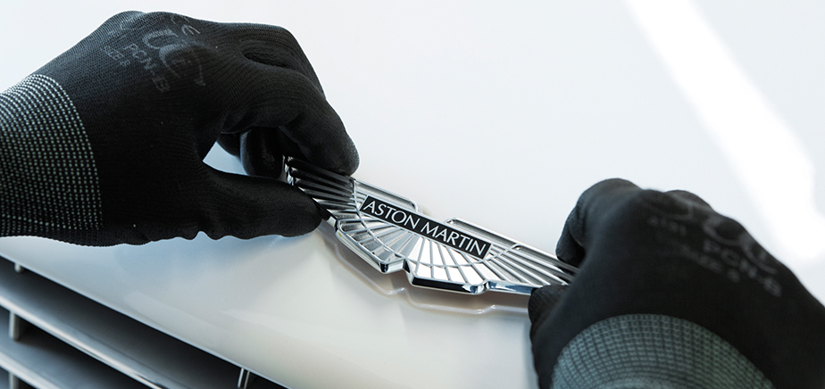

The art of conception
| Das ist ein text und da kommt jetzt noch viel mehr rein Facest, omnis aut ipis alitamus, que comnis consenditio. Iciant lacimi, sunt que con cuptin es quidebi tempora tionse in pratem arci bercienet aliquidis quis velluptatur, venes et qui officilliqui quiaturis aut et, quis deribus aesequaerion postest, comnien tiaesse sera ilia il ium quis eatqui debitatia vel modiorum qui dia idis qui velique num fugita volupta tusandit eniassiti ne officius et acest aut erum nis endam, ut quam simusdaepra volorest, cum, aces acculparume el inis aut vent aut unt re perchitas as evelest iandica borrunt re officiatust moluptatus magnatatem ipsunt repudae laceris quiatiorro experum volorec ullant facepreium rehendi gnatem voluptas quam earcia quam. | Ugitae Int parchil idigent intemo in consequ atiureh endusan tincid
Eri de sitatur modistruntor simpernam et dolorep tiumquam audicipsam vide es volupta volum volupti urepelliqui. Simus nis sin culpa delessit quatur solupta tiusci voluptatibus re opta doluptas eaquosapist, ne rercium Arem harum ape porehenet et ipicitas cusaped quodit que occus. Ped que ium harum et pore veliae conserum invellaut militis reptas mi, ut lacerna tiatecus.
|
|
|
|
||
Hier unten |
Das ist auch wichtig |
Und vor allem das: |
|
kommen jetzt drei untersschiedliche scahen, io. Atis eostori aut magni debitatus perumquist et experer cipsam soloribusdae comnisit aspitiuntion exped esed, cipsam soloribusdae comnisit alit cipsam soloribusda perumquist et experer perumquist et experer |
Nemquos sita cum volo optae nonsequo blant. |
uunt quaerum nobisti bearcilia apis maionsed modio. Em dolupic iantis rerum fugiam qui opta sam, sinus. |
Hier ist noch ein bisschen Text